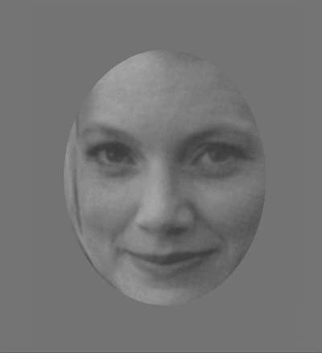
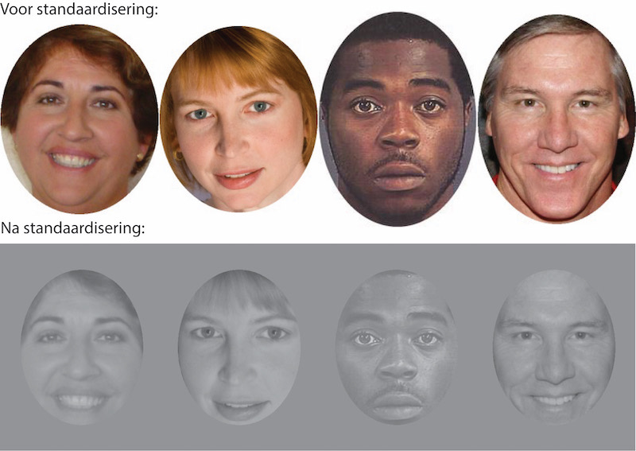
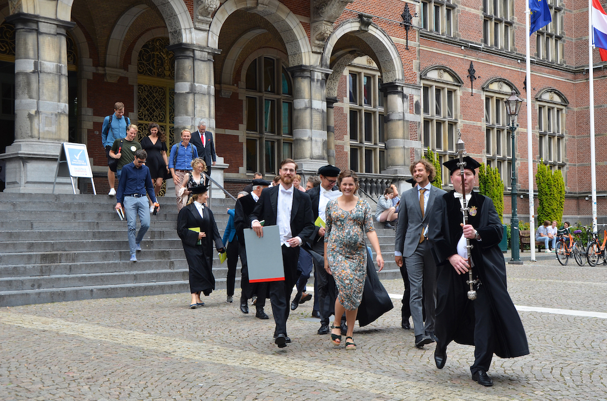
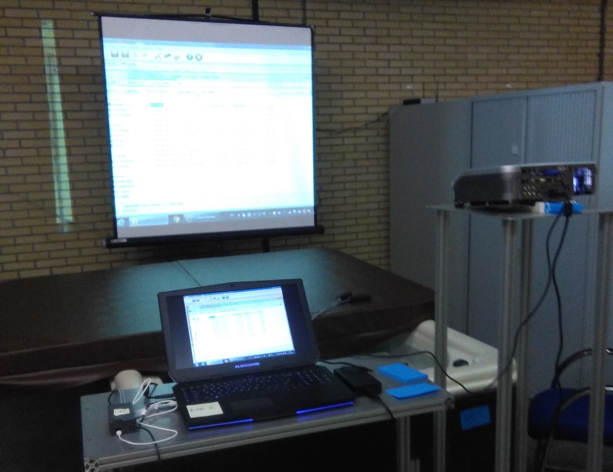
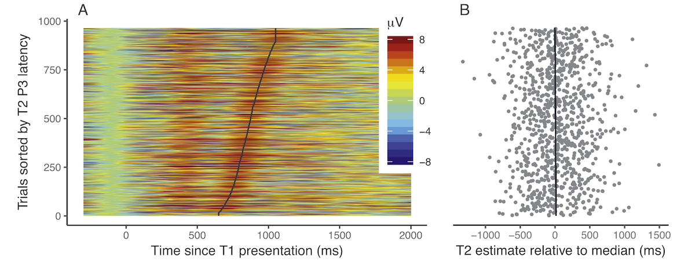
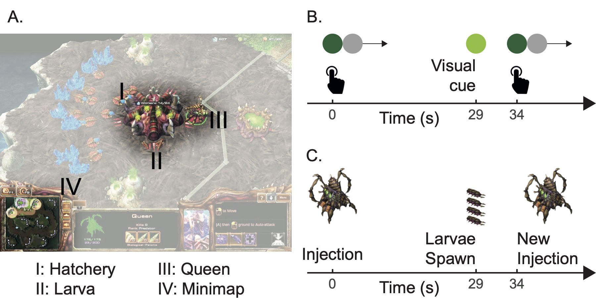
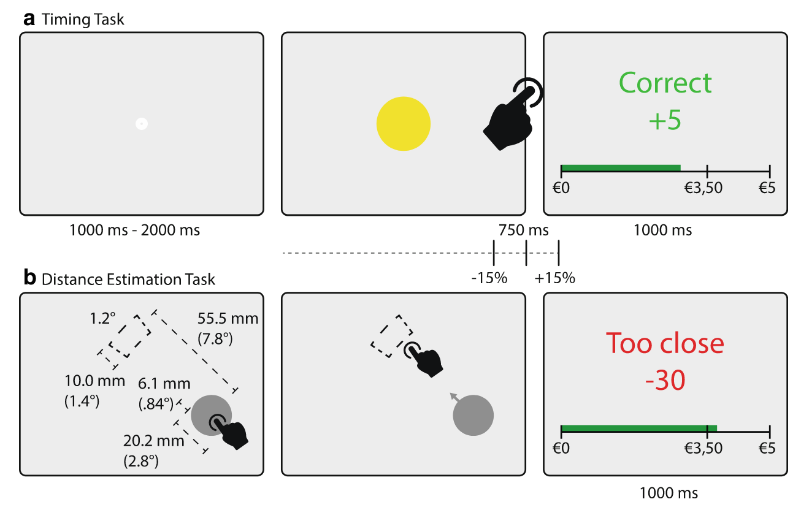
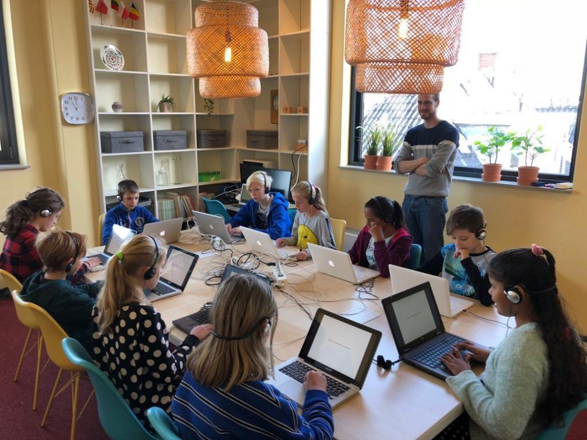

As part of a project funded by Politie en Wetenschap I study how neurophysiological measures (e.g., pupil size, eye movement, EEG) can be used in combination with rapid serial visual presentation (RSVP) to perform concealed information tests (CIT). We develop state-of-the-art methods to classify if participants in mock-crime experiments are hiding information. The results will be published in peer-reviewed journals and open-source software packages.
I developed a module for python that can be used to
classify microsaccades from gaze data collected with an eye-tracker.
I’ve implemented the algorithm from
Engbert
& Kliegl (2003) in a module called pycrosaccade,
which can be installed using pip. The source code is
available at
https://github.com/robbertmijn/pycrosaccade.
I developed software that can be used to show rapid serial visual presentations in combination with Open Sesame (Open Source software used to present stimuli and record responses). The source code is available at https://github.com/robbertmijn/opensesame-plugin-RSVP.

In a typical CIT, we compare a participants’ response to a probe stimulus (e.g., face of the victim) with the same participants’ response to a control stimulus (e.g., a random face from a large database). Because neurophysiological responses are very sensitive to the physical properties of a stimulus, all these stimuli require some form of standardisation. For face stimuli, I’ve developed a tool that scales, rotates, crops, and standardizes contrast and luminance for a large set automatically using face recognition. The source code is available at https://github.com/robbertmijn/opensesame-plugin-RSVP.

In 2017 I started studying time perception in the Temporal Cognition Lab of Hedderik van Rijn at the department of Cognitive/Experimental Psychology of the University of Groningen. We aim to answer questions about how our brain is able to keep track of time (in the second-minutes range). We design experiments (try one here!), collect neurophysiological data (EEG, fMRI) and do sophisticated analyses, mostly on healthy participants. The results of these studies are published in peer reviewed journals and lead to my dissertation: Timing Under Risk. I defended my thesis and propositions during my PhD defense on June 17 2022

Changes in body temperature could influence the way our brain functions. For example, it is thought that our internal clock speeds up when core body temperature rises. In a controlled experiment, we heated up participants in a jacuzzi and asked them to perform a timing task, and a decision making task. We found out that temperature plays an important role in decision-making under time pressure.

In our search for the clock in our brain, we tried to figure out in what way memory consolidation may be involved as a starting signal for interval timing. Using EEG, we investigated if the P3 (an electrical signal that can tell us if/when something is consolidated into working memory) - which can be slightly delayed if you show two things in rapid succession (which we sometimes call the attentional blink) - is related to time estimation. It wasn’t, which was very surprising!
Our paper about this finding was published in Neuropsychologia, Read it here!

Time perception is often studied in artificial laboratory conditions; a participant sits in front of a screen and is asked to judge time intervals or press buttons for very specific durations. We are sometimes faced with participants who are not that motivated to do our experiments. In this study, I analysed a large set of replays from the popular online real-time strategy game StarCraft2. Players of that game know very well how to exploit temporal regularities of the Queen Inject ability. Good estimation of how much time has passed is advantageous for them, and this dataset therefore provides a unique way to study time perception! In 2019 I Presented a poster at Timing Research Forum about this project. Read more about it on my OSF repository.. Me and Hedderik van Rijn also described this study in detail in an article that was published in Cognitive Science.

Attention Perception and Psychophysics published an article written by me, Atser Damsma, Niels Taatgen and Hedderik van Rijn! It’s about the way people are aware of their own impreciseness when trying to time a short interval, and use this awareness to optimize their behavior. Read it here!
In this project I contribute to knowledge about how we use time perception in tasks where being on time really matters for participants. It turns out that being careful about being exactly on time has similar properties to being precise in other types of decisions.
Want to try the type of experiment I use? Try one here!

I wrote a post for Mindwise, the blog platform of the Department of Psychology of the University of Groningen. Read about it on Mindwise!

The Scholierenacacemie developed interactive lessons for high school students based on the research we do on time perception. I developed a set of experiments that students perform themselves first, and then learn how to interpret the results. Read about it on the website of the Scholierenacademie. Part of the package are three explanatory videos like this one, in which I explain some of the result:
Copyright © 2021 Robbert van der Mijn